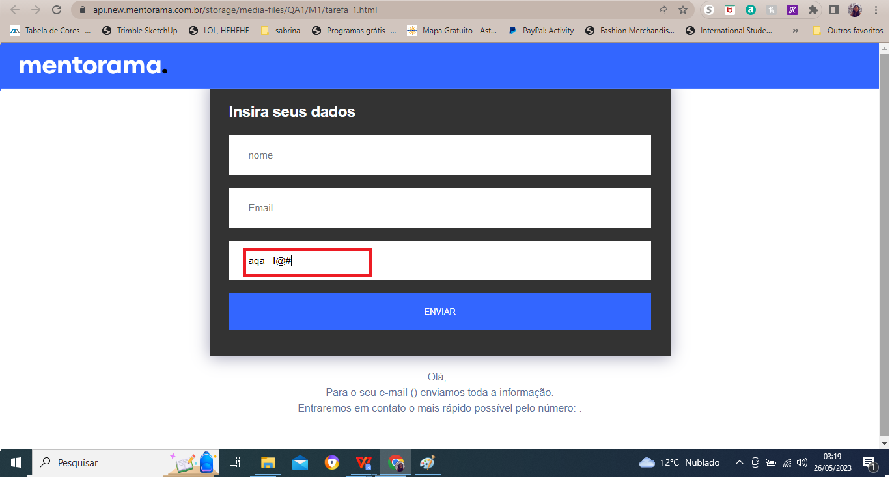
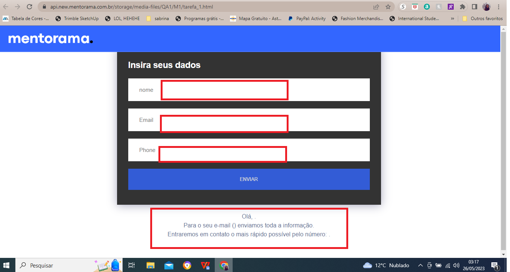
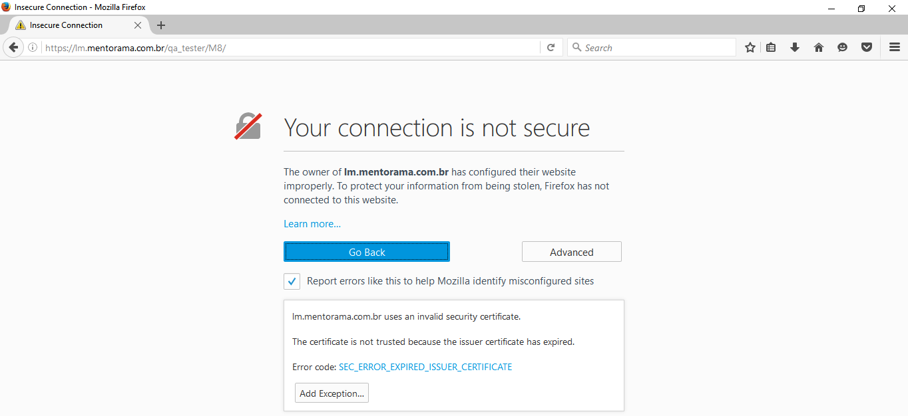
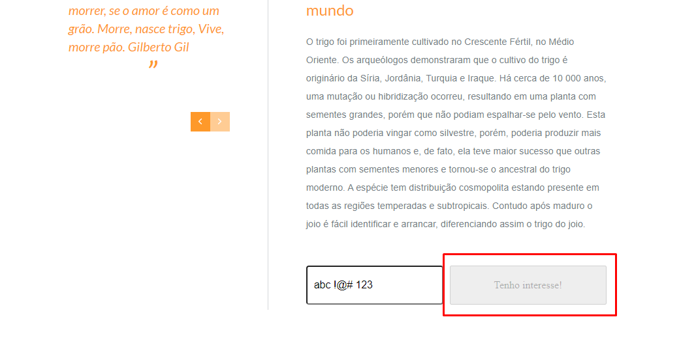
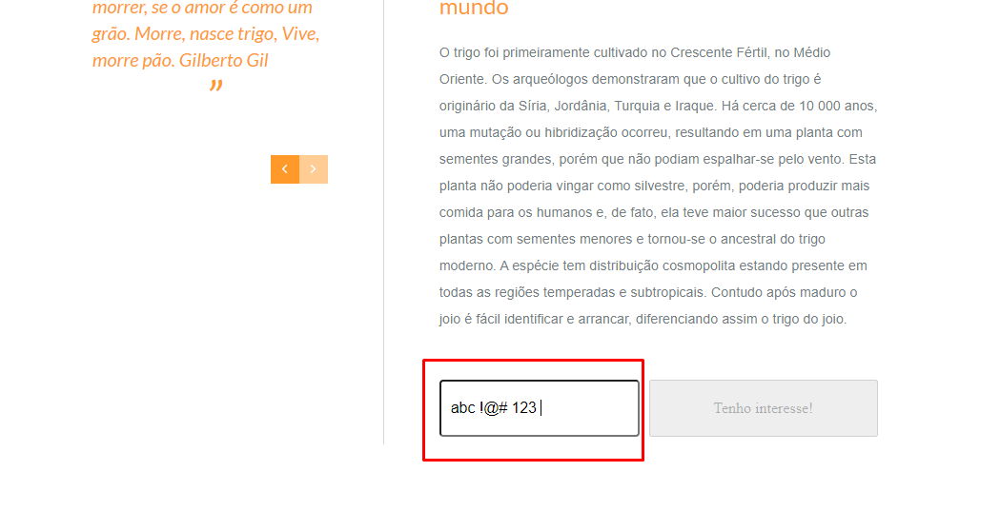
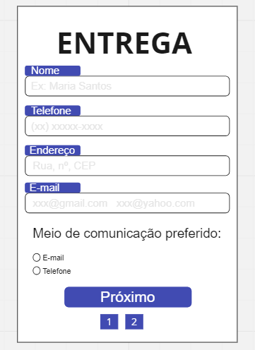

Contact form — 7 bugs found
Functional testing of a contact form (name, e-mail, phone) in the staging environment.
BUG-001 — Phone field accepts letters and special characters Medium
| Steps | On the form page, type a letter, space, or special character into the phone field |
| Actual result | The field accepts the invalid characters |
| Expected behavior | Accept digits only |
| Environment | Staging |
| Impact | Customers can submit wrong data and never be contacted |
| Status | Open |

BUG-002 — Form submits with every field empty Medium
| Steps | Without filling any field, click "Send" |
| Actual result | The system accepts the empty submission |
| Expected behavior | All required fields must be validated before submission |
| Environment | Staging |
| Impact | Customers can submit an empty form and never be contacted |
| Status | Open |

BUG-003 — E-mail field accepts text without a domain Medium
- Steps: type letters, numbers, spaces, or special characters without an e-mail domain.
- Expected: accept only e-mails with a valid domain (e.g.,
@gmail.com) and no spaces. - Status: Open
BUG-004 to BUG-006 — Partial field validation Medium
The system accepts the submission when only one field (name, phone, or e-mail) is filled — correctly or not — without validating the other required fields.
- Expected: all fields must be filled for the submission to be accepted.
- Status: Open
BUG-007 — Page does not load in Firefox Urgent
- Steps: open the form URL in Mozilla Firefox.
- Actual result: the page does not load.
- Expected: the site must load in every supported browser.
- Status: Open

Final project — "Wheat Lovers" website
In the final project, every failed test case generated a bug report. Highlights:
BUG-0001 to 0005 — No menu button responds Urgent
Every top-menu button (Commercial, Industrial, Infrastructure, Resources, Utilities) does not respond to clicks, blocking access to those pages.
- Severity: Urgent — blocks the site's main navigation.
- Expected: each button must load its corresponding page.
BUG-0006.1 — Menu in a foreign language Medium
The menu is in English on a Portuguese-language site — customers may not understand it. Expected: translate the menu buttons.
BUG-0006.2 — Insufficient text contrast Low
The text color below the main headline makes reading difficult. Expected: use a color that contrasts with the background (accessibility).
BUG-0007.2 — "I'm interested" button inactive Medium
After typing a phone number and clicking "I'm interested", the button does not submit — customers cannot register interest.


Usability testing — Delivery form
Findings logged during a usability session:
- The "phone" field accepts special characters, letters, and spaces.
- There is no customer e-mail field as a contact option.
- Navigating to page 2 and back changes the "save" button's language.
- The "delivery date" field accepts special characters, letters, and spaces.
- The "delivery time" field doesn't state a unit (hours, days, weeks) — plain numbers can be misread.
- In "choose a shipping method", every option can be checked at once and the choice can't be undone.
- The form is accepted with every field empty.
- With both phone and e-mail selected, the system doesn't register the "phone" choice.
- The "save" button performs no action at all.
